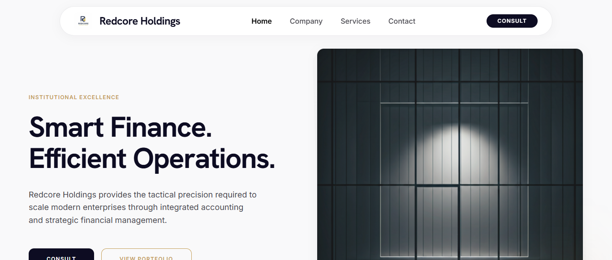

Featured Projects
A selection of client and personal work — built, shipped, and live.

Redcore holdings
Go liveA responsive business website showcasing accounting, finance, and operations management services through a modern React and TypeScript frontend focused on usability and performance.
My contributions
- Designed and developed the frontend using React, TypeScript, Vite, and Tailwind CSS.
- Created a responsive and professional user interface optimized for desktop, tablet, and mobile devices.
- Built reusable components to ensure scalability and maintainable code architecture.
- Implemented modern layouts that clearly showcase the company's accounting, finance, and operations services.
- Established a consistent visual identity aligned with Redcore Holdings' corporate brand.
- Optimized performance, accessibility, and user experience for a fast and reliable website.
A comprehensive corporate web solution focused on professionalism, credibility, and business growth.

Brush and Beyond
Go liveA dynamic, campaign-driven website created to promote Crown Paints' wide range of products, blending creativity and commercial appeal. Aimed at driving engagement through vibrant visuals and structured messaging.
My contributions at Kapu Digital Limited
- Custom design and theme customization in WordPress to match Crown's brand identity.
- Responsive layouts with HTML and CSS across all devices.
- Integrated gallery and contact plugins for product discovery.
- Optimized website performance for fast loading.
- Cross-browser testing to ensure consistency.
- Collaborated with designers and project managers on campaign goals.
This project brought a creative, campaign-focused vision to life through tailored WordPress development.

Sedgwick
Go liveA global insurance and claims management corporate website centered on digital credibility, improved content structure, and easy-to-access service information.
Key contributions during internship
- Migrated and restructured WordPress content for clarity and trust.
- Built responsive sections using HTML, CSS, and page builders.
- Enhanced navigation and user flow for a broad user base.
- Set up plugins for compliance and performance.
- Implemented SEO basics to improve online visibility.
- Supported revisions based on client feedback.
Real-world experience building formal, trust-centered digital experiences for enterprise clients.

Success By Design
Go liveA personal growth and coaching platform built to help individuals maximize their potential through tailored mentorship and training programs, reflecting the brand's uplifting mission.
My contributions at Kapu Digital Limited
- Designed and structured the frontend using WordPress, HTML, and CSS.
- Built responsive layouts that present content clearly across all devices.
- Integrated plugins for blog functionality, contact forms, and content updates.
- Shaped site content flow and tone to match the brand's empowerment message.
- Ensured visual harmony and brand consistency with the design team.
- Optimized for speed, usability, and future scalability.
A hands-on role in creating a mission-driven website that inspires and informs.

VeggieCrate
A full website designed and developed for a local produce delivery business specializing in Irish potatoes and fresh vegetables, providing a clean and functional online presence for wholesale and retail customers.
Key features
- Fully responsive design for desktop and mobile.
- Clear product presentation focused on bulk orders and grading.
- Easy navigation with clear CTAs: Order Now, Contact, Custom Orders.
- Sections for About, Vision & Mission, Delivery Schedule, and FAQs.
- Off-canvas mobile menu for smooth navigation.
- SEO-friendly structure to support online visibility.
Designed to grow as the business adds more vegetables and services.

Darko Orphans
Go liveA website for a non-profit organization dedicated to supporting vulnerable children through education, empowerment, clean water, feeding programs, and sponsorship opportunities — built to communicate the mission clearly and encourage involvement.
Key features
- Fully responsive design for desktop and mobile.
- Clear CTAs: Donate, Sponsor, Get Involved.
- Dedicated program pages highlighting core initiatives.
- Inspiring visuals and transformation stories.
- SEO-friendly structure for global reach.
- Designed to grow with new programs and partnerships.
A professional digital presence that strengthens the mission and simplifies supporter engagement.